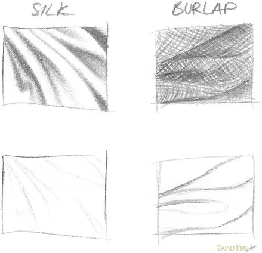
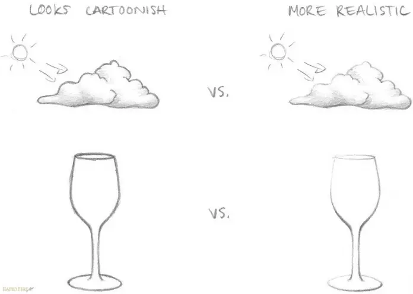
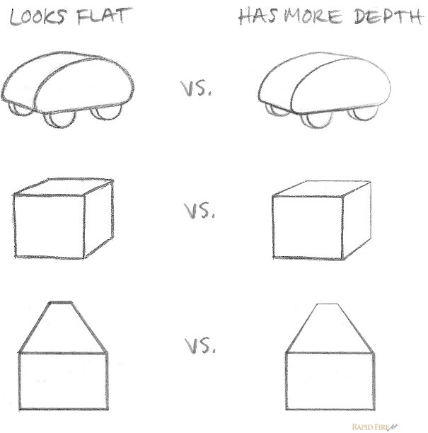

¿Tus dibujos tienen buena estructura, pero les falta profundidad, peso, textura o realismo? En esta lección, aprenderemos cómo la calidad de línea puede:
El grosor de una línea se conoce como calidad de línea y puede sugerir el material, la iluminación, el peso y mucho más. Incorpora distintos grosores de línea en tu obra para realzarla aún más. Puedes encontrar algunos ejemplos a continuación.
Las líneas finas parecen más suaves que las gruesas cuando se trata de dibujar texturas en la ropa o incluso en mechones de cabello:
El ejemplo de la izquierda contiene líneas muy tenues debido a que cada hebra de seda es muy fina. Probablemente puedas imaginarte la textura de la tela con solo mirarla. La arpillera, en cambio, es un material muy áspero y grueso, por lo que las líneas son marcadas y contundentes.
Si dibujas una escena con alto contraste, intenta usar líneas más gruesas para las zonas sombreadas. Cualquier lado que dé hacia la luz debe ser fino. En algunos lugares, las líneas pueden incluso ser inexistentes, lo que obliga al espectador a rellenar los espacios por su cuenta.
En el ejemplo de la izquierda, la luz proviene de la parte superior derecha. Por lo tanto, las líneas son más gruesas en el lado izquierdo y más finas en el derecho. En el ejemplo de la derecha, la luz proviene de la parte superior izquierda, por lo que las líneas son más gruesas en el lado derecho y más finas en el izquierdo.
El grosor de las líneas también puede ayudar a dirigir la mirada del espectador hacia donde desees. Las líneas más gruesas tienden a atraer más atención que las finas. En el ejemplo de abajo, la bolsa de la izquierdo tiene líneas menos gruesas que el derecho, lo que hace que el espectador mire primero hacia la derecha.
El grosor de las líneas también puede ayudar a crear profundidad en un dibujo. Las líneas más gruesas pueden hacer que un objeto parezca más cercano al espectador, mientras que las líneas más finas pueden hacer que un objeto parezca más lejano. En el ejemplo de abajo, el árbol en primer plano tiene líneas más gruesas que los árboles en el fondo, lo que crea una sensación de profundidad.
Recuerda que estas son solo pautas generales y que siempre puedes experimentar con diferentes grosores de línea para ver qué funciona mejor para tu dibujo. ¡Diviértete explorando la calidad de línea y cómo puede mejorar tus habilidades de dibujo!